范围：应用图标（Dock / 任务栏 / 窗口 / 安装器）+ 系统托盘图标。本页是选型用提案稿，
不覆盖 apps/desktop/build/ 下的生产资产；选定方向后再落地为矢量源 + 生成脚本 + 全尺寸资产。
现有图标不是「不好看」，而是在它必须工作的两个尺寸上都失效了，并且仓库里没有可再生的矢量源。 下面每条都给了可复核的证据。
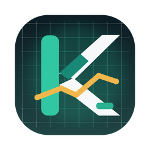
build/tray.png 单张 128×128menu.ts:231-241 载入后 resize(22)，无 2x 供图| # | 问题 | 证据 | 影响 |
|---|---|---|---|
| 1 | 小尺寸糊成一团 | 32px 下「K」由 4 类形状（青色圆头竖条 / 白斜条 / 白折线 / 琥珀折线）拼成，笔画互相咬合 | 任务栏、窗口标题、通知里认不出 |
| 2 | 色彩与形状过多 | 4 色（深绿底 + 青 + 白 + 琥珀）+ 网格线；1024px 好看，16–32px 变成噪点 | Dock 里抓不住眼，缩小后脏 |
| 3 | 尺寸档位互相矛盾 | icons/128x128@2x.png 内容占 82%（有留白，合规）；icons/32x32.png alpha 全出血占 100% | 同一应用在 Dock 与任务栏里视觉大小差一圈 |
| 4 | 托盘无 @2x、靠运行时缩放 | menu.ts:217-244：单张 128px → resize() 到 22（macOS）/32（Win/Linux），再 setTemplateImage(true) | Retina 菜单栏二次重采样，边缘发虚、笔画发灰 |
| 5 | 托盘图形本身过密 | 128px 源图里折线横穿「K」的干支与两臂，交叉处形成 3 个细碎尖角 | 16pt 下 K 与折线互相吃笔画 |
| 6 | Dock 图标在开发态被降级 | main.ts:119-132 用 256px PNG 覆盖；而打包态 AppKit 用 .icns（含 1024） | 开发态 Dock 图标比打包态糊 |
| 7 | 没有矢量源，不可再生 | 全仓无图标生成脚本（grep iconutil/sips/rsvg scripts/ → 0）；icon.icns / icon.ico / *.png 均为二进制孤本 | 改一版要手搓全部尺寸，无法保证一致 |
四个方向刻意在视觉语言上分开（不是同一图形的配色变体），这样才有得比： 字母体 vs 市场语义 vs 实色场 vs 去字母化。每张图都按 macOS 图标网格绘制 （1024 画布 / 824 内容区 / 连续曲率圆角），下面同时给出 32px 真实像素与托盘双底色效果。 方向 C 有两种调性（品牌亮绿 C1 / 深绿保对比 C2），合计 5 张候选图。
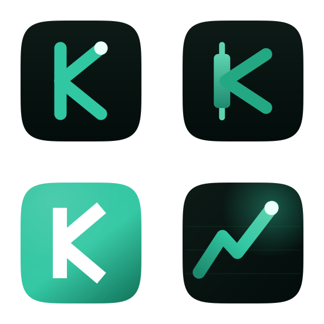
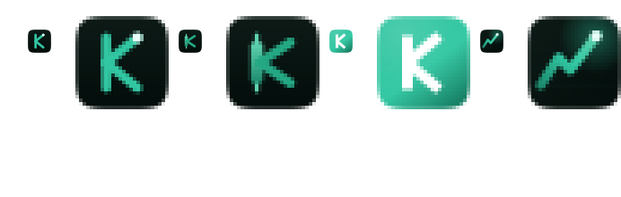
左＝真实 32px，右＝4× 放大（看笔画是否相融）
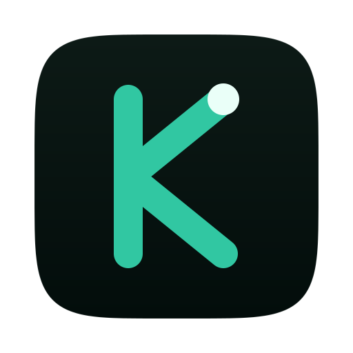
概念：把 1.x 那个「拼出来的 K」收成一笔等宽字。深空底 + 单色品牌绿描边， 顶部收笔处放一个薄荷色数据点——它既收住了字形，又点了「最新一个数据」的含义。 网格、琥珀折线、多重色块全部去掉。
小尺寸表现：32px 字形清晰；16pt 托盘把笔画从 84/824（10.2%） 加重到 3.7/26（14.2%），并砍掉数据点——这是模板图的标准做法（下节详述）。 品牌绿与墨底对比实测 9.21:1，四个方向里笔画的对比冗余最大。
Marks.tsx 侧栏标记同源，用户无迁移感；但「深色底 + 单色字母」是量化/开发工具的通用脸，
放进 Dock 里与一堆深色终端图标区分度一般。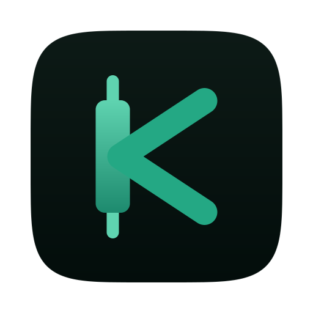
概念：干支就是一根竖蜡烛（受光最亮的实体 + 上下影线），两臂是一笔折线。 远看是 KStock 的 K，近看是一根 K 线——把「名字」和「行业」压进同一个字形。
小尺寸表现（已实测）：32px 时上下影线已接近消失，蜡烛语义丢失但字形还在； 16pt 托盘里影线（2/32 → 1px）与实体糊成一个疙瘩， 必须依赖「去掉影线」的托盘简化版，此时它退化回方向 A 的观感。
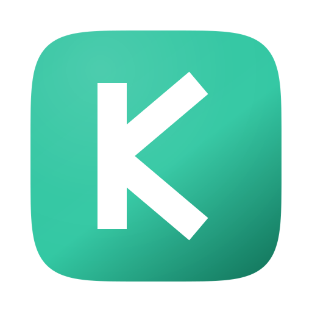
概念：去掉深色底，整块品牌绿渐变场填满 squircle，K 用平口（butt cap）几何字形直接压在上面， 左上一束极淡的受光。它不靠细节辨认，靠色块的轮廓辨认——这与 macOS 原生图标（股票/新闻/邮件）的记法一致。
小尺寸表现（已实测，四者最佳）：32px 下白字踩在纯色场上，字形不依赖细节， 辨识度明显高于另外三个；16pt 托盘用同字形加重到 3.6/32，笔画不糊。
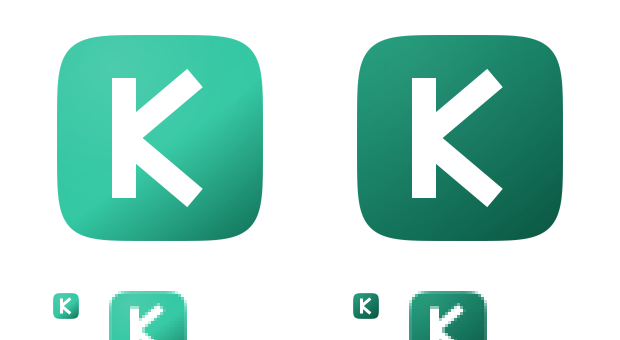
| 调性 | 场色 | 白字对比（实测） | 取舍 |
|---|---|---|---|
| C1 品牌亮绿 | #2ec39f → #31c7a2 → #157a60 | 1.93 : 1 ～ 5.13 : 1 | 忠于 tokens.ts 的暗色品牌绿，Dock 里最亮眼；浅端字形略飘 |
| C2 深绿保对比 | #1e9a79 → #14775e → #0c5a45 | 2.96 : 1 ～ 8.08 : 1 | 全图≈3:1，字形任何位置都实；色调更沉稳，亮度低于亮绿 |
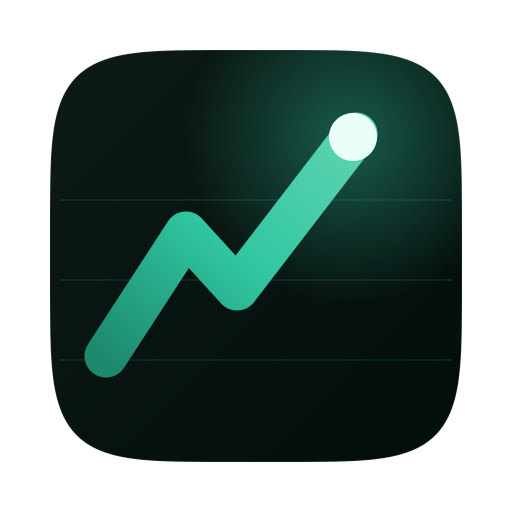
概念：完全不出现「K」。深空底 + 横向发丝网格（呼应 client-brand/background.ts 里的
52px 环境网格）+ 一条带回调的上升折线，末端一个薄荷节点表示「智能体正看着的那个点」。
小尺寸表现：折线在任何尺寸都能读，16pt 下去掉网格与光晕、只留折线 + 端点，是四个方向里 托盘最省事的一个；但 32px 下它与市面上大量「上升折线」图标无法区分。
要求：用「麒麟」两个汉字做成印章。这个方向在大尺寸上最有力（辨识度、文化语义、与
--dsw-specific-brand-seal-fill「品牌印记」的既有词汇完全一致），但在小尺寸上撞到两个字面意义上的物理下限。
下面把所有约束实测出来，再给出可落地的分档方案。
fc-list 实测本机可用中文字体只有
Noto Sans CJK SC（含 Black）、Songti SC、Heiti SC、Hiragino 系列——
没有篆书/隶书。
所以本稿是「现代粗黑体印」。真正的篆书印章需要字体授权或手工描形。
附注：篆书（尤其缪篆）笔画等宽、布白均匀，小尺寸表现明显优于黑体—— 字体不只是风格问题，也直接决定 16–32px 能不能看。
「麟」23 画。16pt 托盘里一个字只有约 12–16px 见方，平均每画不足 0.7px—— 两个汉字在 16pt 托盘里不可能读出来。
这不是设计取舍，是物理下限。证据见下方托盘实测最后一格（单字「麟」直接进 16pt）。
我先前判断「2 字方印只能竖排」，拿到篆书字形后实测推翻了这个判断： 小篆字形本身瘦长，实测墨迹宽高比 0.644（麒）/ 0.675（麟）， 所以方印里横排才填得满（右麒左麟，篆印自右向左读）；竖排反而两侧留白一大片。
「横排会压扁字形」只对楷书／黑体这类方正字形成立，对篆书不成立——见下方篆书实测。
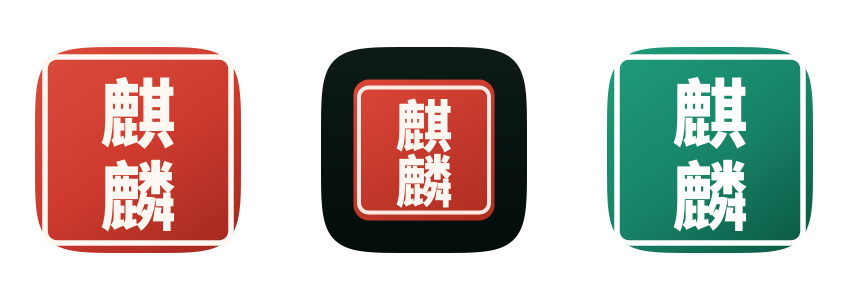
朱砂底 + 宣纸白印文 + 白印边（白文印）。最传统的读法，Dock 里最抓眼。
取舍：与现有品牌绿完全脱钩，是一枚「朱印」而不是 KStock 的绿。
深墨底上盖一方朱印（印面内缩、带白内框）。 印章本体只有 564px 见方，像真的盖在深色桌面上。
取舍：与深色工作区界面最连贯；但印面小，字符更小，小尺寸最先糊。
同样的白文印结构，底色换成品牌绿（沿用 C2 的深绿梯度， 白字对比更高）。
取舍：与品牌色板同源，不会引入新色；「绿印」的文化联想弱于朱红。
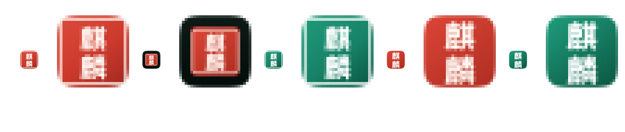
每格左＝真实 32px，右＝4× 放大。依次为：E1 带印框 / E3 带印框 / 小尺寸疏排版（朱红）/ 小尺寸疏排版（绿）/ 满格版（朱红）。
| 执行 | 32px 读出的东西 | 结论 |
|---|---|---|
| E1 / E3（带印框） | 一个带双边框的方块 + 内部花纹 | 「印章」可辨，「麒麟」不可辨；绿版因白框贴边比红版更碎 |
| 小尺寸疏排版（去印框、字放大） | 一块干净的印章底色 + 两个白色记号 | 三者中最好：读得出「这是印章」，字作纹理 |
| 满格版（字铺满印面） | 一块底色 + 一片连成整块的白纹 | 印章感最强，但两字糊成一体，反而更像随机图案 |
「麒麟印章」不能靠一张图打天下。按档位分形制，是大尺寸印章方向唯一能同时成立的解法：
| 档位 | 用在哪 | 图形 | 读出来的东西 |
|---|---|---|---|
| Tier 1 128–1024px | Dock / 启动台 / 关于页 / 安装器 / 物料 | 完整两字印章（E1/E2/E3 任一） | 「麒麟」两字 + 印章形制，完全可读 |
| Tier 2 16–64px | Windows 任务栏 / 窗口标题 / 通知 / 文件图标 | 无印框、字放大疏排版（small-*） | 「一枚印章」可辨，字作纹理 |
| Tier 3 菜单栏 16pt | 系统托盘（单色模板图） | 印章外框 + K（tray_frame + K） | 「带印框的 K」，字形可读 |
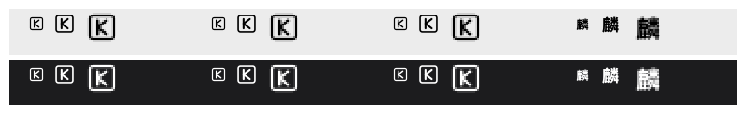
前 3 格：印章框 + K（三种执行共用同一托盘图形）。 最后一格是反例证据：把单字「麟」直接塞进 16pt 的后果。
Marks.tsx 的 K 字标同源。麒麟 在本项目里是引擎的名字
（README：「构建在 QiLin 3.x 引擎『一切皆插件』平台之上」，代码目录 vendor/qilin），
而产品名是 KStock。把「麒麟」放到应用图标与托盘上，等于让应用图标承载引擎品牌。
两种都是成立的选择，但含义不同：走双品牌之后，前面「一张图两张面孔」的问题反而消失了：这不是同一品牌的两张脸，而是两个品牌各自的脸。 而且双色分工天然成立——朱红 = 麒麟（传统、引擎、篆印），品牌绿 = KStock（产品、现代、几何 K）。 三个 Tier 1 版式如下（篆书字形位置当前用黑体占位，见下一节）。
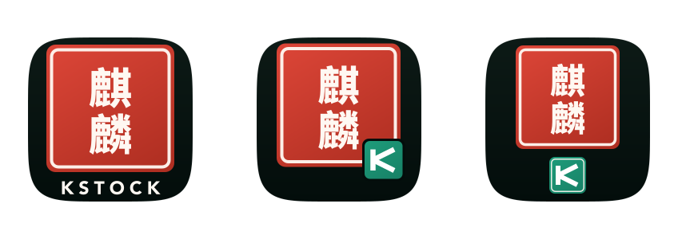
朱印居中偏上 + 底部 KSTOCK 字标（宽字距）。 最像标准品牌锁定（lockup），适合关于页 / 官网 / 物料。
已按你的意见去掉右下角的绿 K 印；字标颜色有白 / 品牌绿两版，见下。
朱印（麒麟）为主，右下角压一枚品牌绿 K 小印（带墨色分离环，像骑缝 / 落款）。 产品标识与引擎标识同时在场，且不占版面。
风险：两印相接，1024 下有分离环啃掉朱印白印边的观感问题，需再微调 2–3px。
上朱印（麒麟）+ 下绿印（K）居中对齐，像「对章」。 版式对称、层级清楚，绿印带白内框，与朱印共用同一套印边语言。
风险：主印被压到 520px，麒麟两字相应变小。
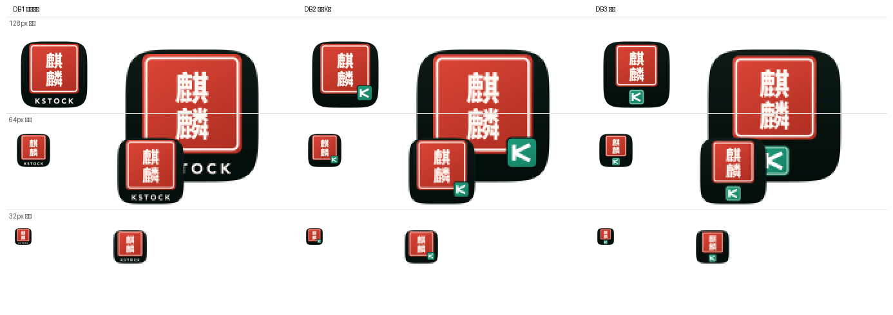
| 尺寸 | DB1 印下字标 | DB2 角标 K 印 | DB3 对印 |
|---|---|---|---|
| 256px | 印章 + 字标均可读 | 麒麟 + 绿 K 印均可读 | 两印均可读 |
| 128px | 字标糊成一条线，等于什么都没有 | 麒麟成纹理，绿 K 印仍可辨 | 麒麟成纹理，绿 K 印仍可辨 |
| 64px | 字标成噪点 | 绿 K 印仍可辨（一小块绿 + 白 K） | 绿 K 印仍可辨 |
| 32px | 红色块 + 底部噪点 | 整体糊，但绿角仍可辨 | 整体糊，但绿印仍可辨 |
我已把「麒麟」两个篆书字形合成进朱印（不是黑体占位了）。 字形取自 Wikimedia Commons 的《说文》小篆描摹轮廓，用「同色 stroke 补厚」把双钩空心笔画实体化， 再按渲染 10× 量出的真实墨迹包围盒定标定位——所有间距都是算出来的，不靠肉眼调参。
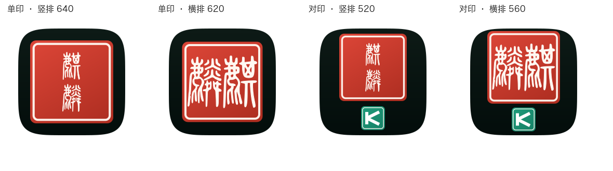
| 版式 | 印面利用 | 观感 |
|---|---|---|
| 单印 · 竖排 640 | 差：字瘦长，两侧留白一大片 | 像两个窄条挂在印面上，不像刻出来的章 |
| 单印 · 横排 620 | 好：两字并排正好铺满印面 | 标准小篆方印的观感，字与印边呼吸合适 |
| 单印 · 竖排 640 | 差：字瘦长，两侧留白一大片 | 已被横排取代 |
| DB1 · 横排 + 字标（定稿） | 好 | 篆印饱满 + 底部 KSTOCK 字标；绿 K 印已按你意见去掉 |
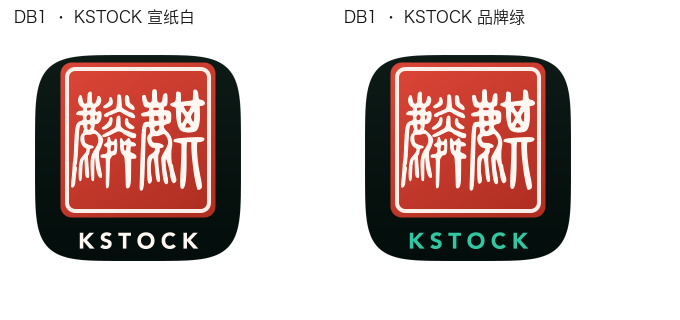
宣纸白（#fff8f2）：与印文同色，克制、经典。
品牌绿（#31c7a2）：去掉绿 K 印之后，Tier 1 里就再没有产品色了；
字标改绿能把产品色带回图标，并与 Tier 2 / 3 的绿底 K 同色。我倾向品牌绿。
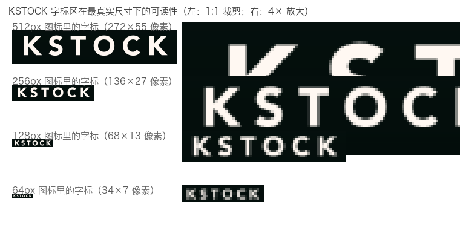
| 尺寸 | 字标实际像素 | 结论 | 该档用哪个形制 |
|---|---|---|---|
| 1024 / 512 | 272×55 px | 清晰 | 朱印 + KSTOCK |
| 256 | 136×27 px | 清晰 | 朱印 + KSTOCK |
| 128 | 68×13 px | 一条糊线（1:1 下读不出） | 去掉字标，朱印居中放大 |
| 64 | 34×7 px | 噪点 | 去掉字标，朱印居中放大 |
| 48 / 32 | — | 印章只剩色块 | Tier 2（C2 绿场 K，16/24 再加重笔画） |
| 菜单栏 16pt | — | — | Tier 3（印章框 + K，单色模板） |
所以 DB1 的字标代价被这一步抵消了：同一套源、按尺寸出不同形制—— 这也正是「图标集」的标准做法（Apple 自己的指导也是小尺寸简化）。
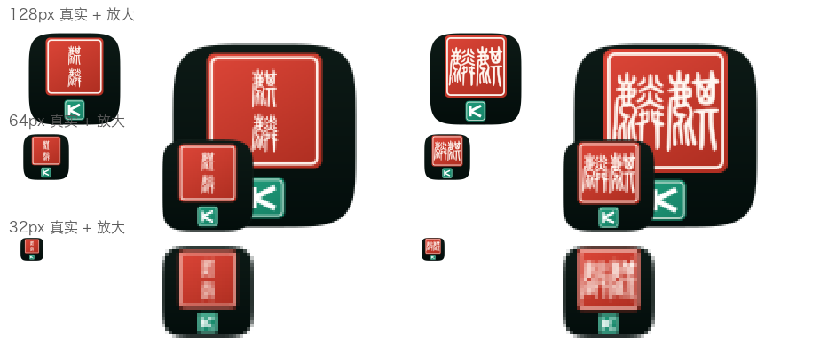
128px 起篆书笔画开始粘连、变成「纹样」；64px 仍有印章形制；32px 只剩色块。 整条下降曲线与双品牌规则一致：朱印先糊、绿色 K 印撑到最后。
本机没有篆书字体，我把可用来源逐个核实了一遍。结论：没有一款能「下载即用」且授权干净的篆体覆盖「麒麟」两字。
| 来源 | 覆盖「麒 / 麟」 | 授权 | 可得性（已实测） |
|---|---|---|---|
| 霞鹜篆书 LXGW Seal | 否 | SIL OFL 1.1（可商用、可改作） | 可下载；但字表实测不含麒 / 麟，作者亦明确不再大扩字数 |
| 全字库说文解字（CNS11643 篆体） | 是 | 政府资料开放授权（可商用，需署名） | 官方下载页已失效、moedict 镜像 404、Wayback 逾时——目前拿不到 |
| 方正小篆体 / 汉仪篆书 | 是 | 字库商业授权（个人免费，商用需购买） | 网上有未授权副本，不可用于产品 |
| 崇羲篆体（中研院小学堂） | 是 | CC BY-ND 3.0：可商用但禁止改作 | 把字形转成图标轮廓＝改作，有法律风险，需先取得作者同意 |
| 北师大说文小篆 / 华瑞小篆体 | 是 | 授权不明（多标「个人使用免费」） | 风险不可控，不建议 |
| Wikimedia Commons「<字>-seal.svg」小篆字形 | 是 | Commons 自由授权（具体协议待确认） | 已下载并合成出稿（见下）；落地前必须打开文件页确认授权 |
| 自绘 / 委托字形（以《说文》篆形为依据） | 是 | 完全自有 | 需要字体设计师；但这是 logo 的正确做法 |
托盘是这次重构里最容易翻车的一半（方向 E 的「印章框 + K」同样受本节全部规则约束）：它不能是应用图标的缩小版。下面是本次四个方向共同遵守的规则， 也是落地时要写进生成脚本的硬约束。
trayTemplate.png(16) + trayTemplate@2x.png(32)，
交给 Electron 合成，不再运行时 resize()。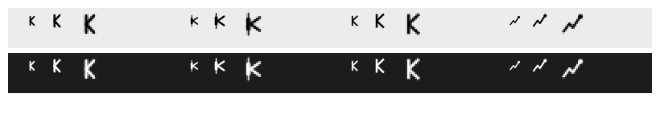
每格：16pt 真实 / 22pt 真实 / 16pt 2× 放大。 深色行已按系统模板反色规则还原。
结论：A 与 C 在 16pt 下字形最稳；B 的蜡烛干支在 16pt 会糊（需简化版）； D 可读但无字形记忆。
重构不只是换图。尺寸齐、命名对、加载路径对，图标才不会在某个平台上被拉伸或降级。 下表左列是仓库现状（已逐一实测），右列是目标。
| 用途 | 现状 | 目标 |
|---|---|---|
| macOS App / Dock | build/icon.icns 实测 11 档（含 1024/512/256 及 @2x），覆盖完整 |
保留 .icns 为唯一真源；打包态不要用 256px PNG 覆盖（main.ts:119-132 限定 dev 态） |
| macOS 菜单栏托盘 | build/tray.png 单张 128px → resize(22) |
build/trayTemplate.png(16) + trayTemplate@2x.png(32)，nativeImage.createFromPath 直接取（Electron 自动识别 @2x） |
| Windows 窗口 / 任务栏 | icons/32x32.png（全出血、无留白） |
icons/ 补齐 16/24/32/48/64/128/256/512/1024，统一 82% 留白；resolveWindowIcon 优先取 256 |
| Windows 托盘 | 回落用彩色全出血的 icons/32x32.png |
专用彩色多尺寸 tray.ico(16/20/24/32)，或 tray-16/32.png |
| Windows 安装器 | build/icon.ico 实测 6 档：16/32/48/64/128/256（缺 24） |
重出 16/24/32/48/64/128/256（共 7 档，256 用 PNG 压层） |
| Linux | icons/ 仅 32/128/256，缺 icon.png |
补齐 16→1024 + icon.png（512） |
| 矢量源 / 再生 | 无生成脚本，二进制孤本 | 以 docs/design/icon-refresh/generate.py 升级为真源：一处改形 → 全尺寸重出 + 进 check-ci.sh 校验 |
apps/desktop/electron/lib/menu.ts:217-244 — 托盘改为读 trayTemplate 系列，删除运行时 resize() 与单文件回落链。apps/desktop/electron/lib/window.ts:210-217 — resolveWindowIcon 首选 256/512，避免任务栏用小图放大。apps/desktop/electron/main.ts:119-132 — setDockIcon 仅 dev 态生效（当前逻辑已如此，重构时保持并注释因果）。apps/desktop/electron-builder.yml:21-22,36,62,85 — files 与各平台 icon 路径随新资产同步。kstock/client-brand/src/client/Marks.tsx — UI 内三处商标（**已实施**，见下）。侧栏顶部、会话 hero、设置·关于页三处商标位原先共用同一张「青底 + K 三笔」SVG， 它的病根与应用图标在 32px 糊掉完全一样：K 的三笔在 24px 下互相咬合。 现在三处改为与应用图标同源的标记，并按同一套「按尺寸分形制」规则自动选形：
| 槽位 | 尺寸 | 形制 | 原因（实测） |
|---|---|---|---|
sidebar.brand.mark 侧栏顶部 | 24px | 品牌绿实色场 K | 篆书两字在此尺寸退化为纹理；几何 K 可辨（笔画按小尺寸配重 +25%） |
conversation.hero.brand.mark 会话 hero | 34px | 品牌绿实色场 K | 同上 |
settings.about.mark 设置·关于 | 72px | 朱红白文方印（篆书「麒麟」横排） | 该尺寸下印章形制完整，与应用图标同形制，回答「这个应用长什么样」 |
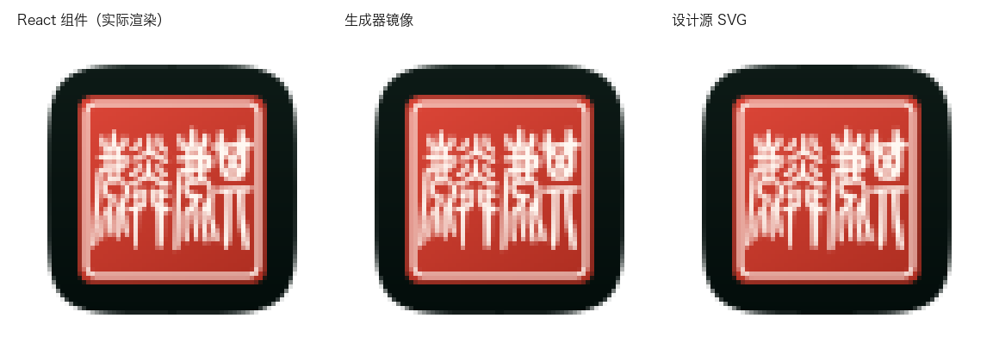
左二为「设计源 72px」与「客户端标记 72px」的逐像素对照——两者几何完全一致， 说明 marks/geometry.ts 的常量确实由设计源算出，而不是手抄一份。
| 维度 | A 一笔 K | B 蜡烛 K | C 实色场 K | D 数据地平线 |
|---|---|---|---|---|
| Dock 识别度 | 中 | 中高 | 高 | 中低 |
| 32px 清晰度 | 好 | 中（影线丢失） | 好 | 中 |
| 16pt 托盘清晰度 | 好 | 差（需简化版） | 好 | 中 |
| 与 1.x / 现有 K 的延续 | 最强 | 强 | 中（字形保留、材质换） | 弱（去字母） |
| 行业语义 | 弱（靠数据点暗示） | 最强 | 弱 | 中（趋势） |
| 与深色终端风 UI 的连续性 | 最强 | 强 | 弱（刻意对比） | 强 |
| 需要额外拍板的点 | — | 是否接受小尺寸语义丢失 | 选 C1 亮绿还是 C2 深绿 | 是否接受无字形记忆 |
| 主要风险 | Dock 里不够跳 | 小尺寸语义丢失 | 与前两者材质不连续 | 撞脸通用金融图标 |
| 维度 | E 的实测结果 |
|---|---|
| Dock / 大尺寸识别度 | 最高——「汉字印章」在一排字母标里几乎不可能被认错 |
| 128px 以上可读性 | 「麒麟」两字完整可读（见 256px 三执行图） |
| 32px 可读性 | 只能读出「一枚印章」，字作纹理（已实测） |
| 16pt 托盘可读性 | 汉字无解，必须换成印章框 + K |
| 文化 / 品牌语义 | 最强，且与代码里既有的「品牌印记」词汇一致 |
| 落地成本 | 多一项：字体授权或篆书描形；且必须维护三档形制 |
已定并实施：① Tier 1 = 篆书朱印（白文印）；② 版式 = DB1 印下字标； ③ 去掉绿 K 印；④ 篆书「麒麟」横排、右麒左麟；⑤ 篆书字形直接使用 Commons 字形（产品不商用）； ⑥ 托盘使用拉丁「K」；⑦ Tier 2 = C2 绿场 K、Tier 3 = 印章框 + K；⑧ KSTOCK 用品牌绿（1 行改动已落）。
已生成的生产资产（bash scripts/build-icons.sh 一次产出）： icon.icns（11 项含 1024）、icon.ico（7 档含 24，逐档取形制）、 icons/ 10 档 + icon.png、 托盘 trayTemplate.png + @2x 与彩色 tray.ico / tray-16/20/24/32.png； 旧的 build/tray.png 已删。断言全过：留白一致 / 模板图纯黑 / icns 含 1024 / ico 7 档 / 字标分档正确。
Electron 四处代码已改：托盘改读模板图与彩色档并删除运行时 resize；窗口图标首选 256； Dock 仅 dev 态注入且取最大档；builder 的 files 段同步新资产。
待你确认：① 是否推送（本轮 6 个本地提交，main 是共享分支且有发布流水线）； ② 打包产物上的视觉验收（本机可跑 pnpm dev:desktop 或 scripts/build-desktop.sh）。
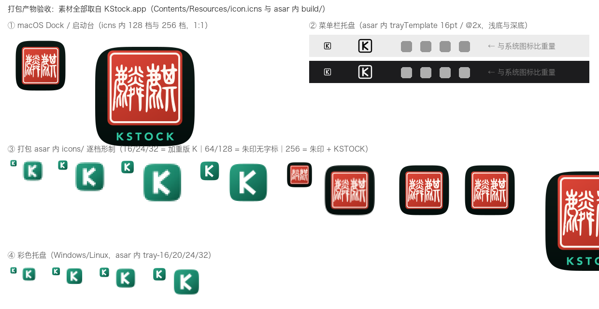
KStock.app/Contents/Resources/icon.icns 与设计产物哈希一致（37c57b7b…）。app.asar 内含全部 17 个图标资产，路径与代码读取一致（build/trayTemplate*.png、
build/tray-*.png、build/tray.ico、build/icons/*）。generate.py 为生产生成器：一次产出 icon.icns / icon.ico / icons/*.png / trayTemplate*.png，并在 check-ci.sh 里加「尺寸齐全 + 命名正确」校验。